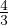

Kera
|
|
 | Kera |
|
|
| |
Kera on pöördkeha, mis tekib poolringi pöörlemisel ümber diameetri. Kera piiravat
pinda nimetatakse sfääriks. Sfääril asuvat kaht punkti ühendavat lõiku, mis läbib
kera keskpunkti nimetatakse kera diameetriks. Kera raadiust tähistatakse tähega
R.
Kera suurringiks nimetatakse kera keskpunkti läbivat lõiget, sellele lõikele vastavat
lõikejoont nimetatakse suurringjooneks. Kera pindala võrdub suurringi neljakordse
pindalaga.
Kera omadused:
- pindala S = 4πR2
- ruumala V = πR3